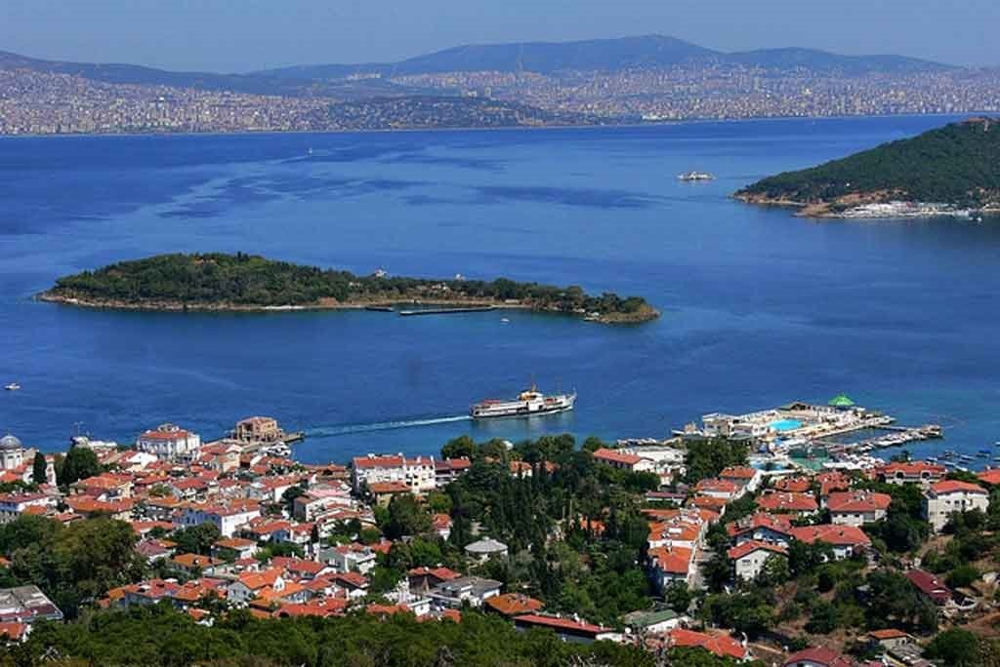
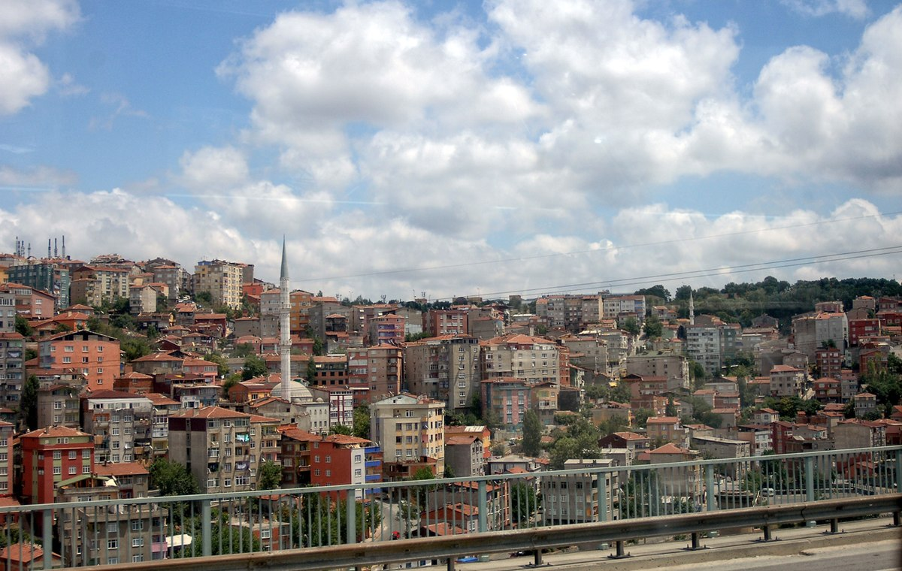
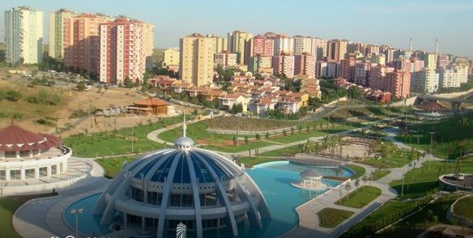
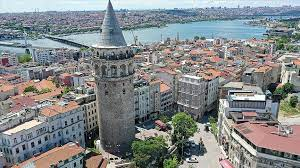
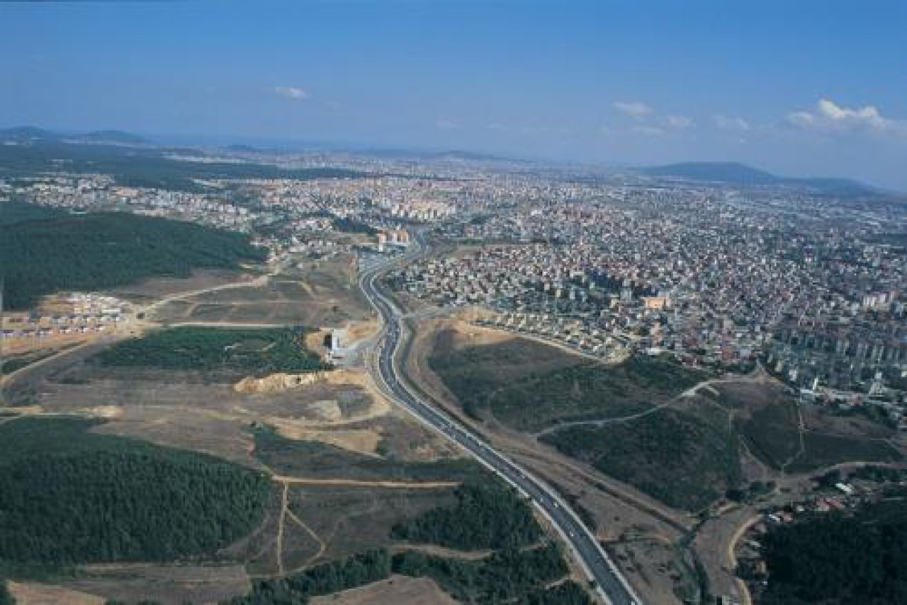
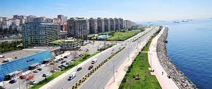
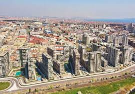

İLÇELER
|
İstanbul, Türkiye’nin en kalabalık şehridir. 2021 İstanbul Nüfusu:15.840.900 ‘dır. İstanbul, kültür, ticaret, ekonomi, eğitim ve turizm açıdan Türkiye’nin en önemli şehridir. İstanbul’un ilçe sayısı 39’dir. İstanbul İlçeleri arasında Esenyurt İlçesi en fazla nüfusu sahip iken 2021 yılı Esenyurt Nüfusu:977.489 Adalar İlçesi ise en az nüfusa sahip ilçesidir. 2021 yılı Adalar Nüfusu:16.372'dir. İstanbul’da Merkez İlçe konumunda herhangi bir ilçe bulunmamaktadır. Ancak nüfus ve ticari yoğunluğun en fazla olduğu iller; Beşiktaş, Beyoğlu, Kadıköy, Şişli ve Fatih’dir. İSTANBUL'UN İLÇELERİ ve NÜFUS DAĞILIMI |
| GÖRSEL | İLÇE İSİMLERİ | MAHALLE SAYISI | NÜFUS |  | ADALAR | 5 | 16.372 | ARNAVUTKÖY | 38 | 312.023 |  | BAHÇELİEVLER | 11 | 605.300 |  | BAŞAKŞEHİR | 11 | 503.243 | BEŞİKTAŞ | 23 | 178.938 |  | BEYOĞLU | 45 | 233.322 |  | ÇEKMEKÖY | 21 | 288.585 | EYÜP SULTAN | 28 | 417.360 | GÜNGÖREN | 11 | 283.083 | KADIKÖY | 21 | 485.233 |  | KARTAL | 20 | 480.738 | SARIYER | 38 | 349.968 |  | ZEYTİNBURNU | 13 | 293.839 |
|---|